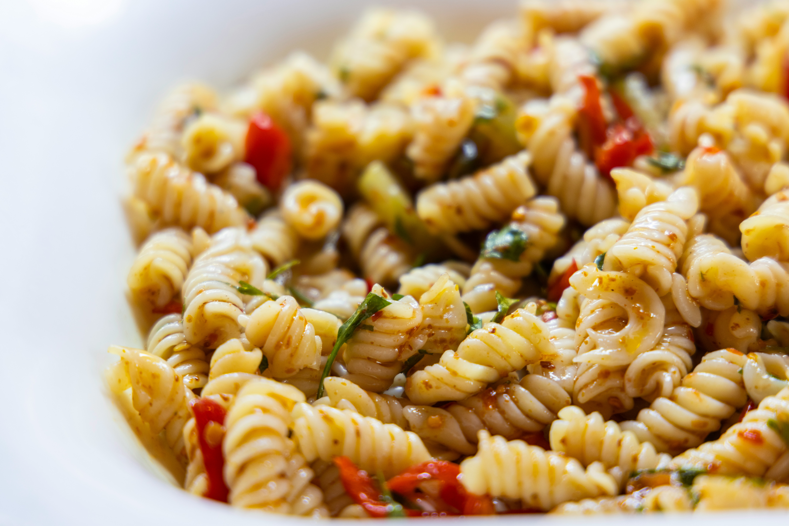

Pasta Primavera
A simple pasta dish packed with fresh vegetables. This recipe is a great way to use up ingredients you already have in your kitchen.
Prep time: 15 minutes
Cook time: 20 minutes
Total time: 35 minutes
Servings: 4

Ingredients
- 12 oz pasta
- 1 tablespoon olive oil
- 1 zucchini
- 1 bell pepper
- 1 cup broccoli
- 1 cup cherry tomatoes
- 2 cloves garlic
- 1/2 cup Parmesan cheese
- Salt to taste
- Black pepper to taste
Instructions
- Bring a large pot of salted water to a boil. Cook the pasta according to the package instructions.
- While the pasta is cooking, wash and chop the vegetables.
- Heat the olive oil in a large pan over medium heat.
- Add the garlic, zucchini, bell pepper, and broccoli. Cook until the vegetables are tender.
- Add the cherry tomatoes and cook for another 2 to 3 minutes.
- Drain the pasta and add it to the pan with the vegetables.
- Season with salt and black pepper and toss everything together.
- Sprinkle Parmesan cheese over the pasta and serve.
Recipe Tags
Have the Ingredients?
The Partial Pantry can help you find recipes based on the ingredients you already have at home.
Recipe Rating
If you enjoyed this recipe, vote for it!
Live Updates
Live vote updates will appear here when the WebSocket connection is implemented.